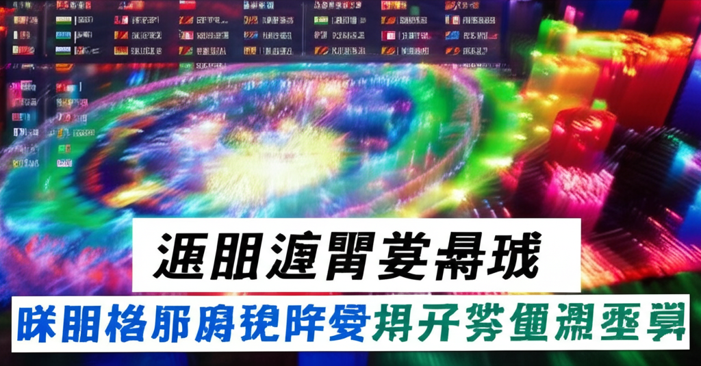

新聞摘要分析與重點整理
引言
本文針對近日新聞資訊進行整理與分析，涵蓋國際情勢、社會事件、財經趨勢以及娛樂新聞等多個面向，力求簡明扼要地呈現重點內容，供讀者快速掌握最新資訊。本次分析涵蓋時間主要集中在2025年4月27日至2025年4月28日，涵蓋來源包括 NOWnews今日新聞、優立德國際有限公司網站、太報、MSN、三立新聞網等。
主體內容
第一點：社會與犯罪事件
- 泰國分屍案： 泰國芭達雅發生一起分屍命案，受害者為一名25歲的潘娜查·沃拉南，凶手為中國籍男子傅通勇已被逮捕。
- 博帕爾警察遇襲事件： 印度博帕爾一名醉酒男子因受害者姓名帶有穆斯林色彩而施虐並攻擊警察。
- 詐騙事件： 台灣詐騙問題嚴重，有藝人蘇霈因投資陷阱損失數百萬。另有新聞指出有詐騙集團勾結中國，誘騙打工青年當車手。
第二點：財經與國際局勢
- IMF預測台灣人均GDP超越南韓： 國際貨幣基金組織（IMF）預測明年台灣人均GDP將超越南韓，韓媒對此表示擔憂。原先預測南韓人均GDP將於2027年突破4萬美元，現已延後至2029年。
- “中心必须区分恐怖分子和平民”： Mehbooba Mufti敦促政府在反恐行動中區分恐怖分子和平民。
第三點：娛樂與生活
- 佳娜與祖雄宣布懷第二胎： 藝人佳娜與祖雄宣布懷上第二胎，並預告6月將公布寶寶性別。他們的第一個孩子為女兒內內。
- 恭喜祖雄升格二寶爸： 祖雄分享佳娜懷第二胎的喜悅，並提到第一胎時腹部隆起不明顯。
結論
綜觀以上新聞摘要，社會安全、國際競爭、以及娛樂生活是近期關注的焦點。詐騙問題在台灣依然嚴峻，提醒民眾提高警覺。台灣經濟發展受國際矚目，人均GDP有望超越南韓，值得關注。 佳娜與祖雄的喜訊為社會增添了喜悅氣氛。